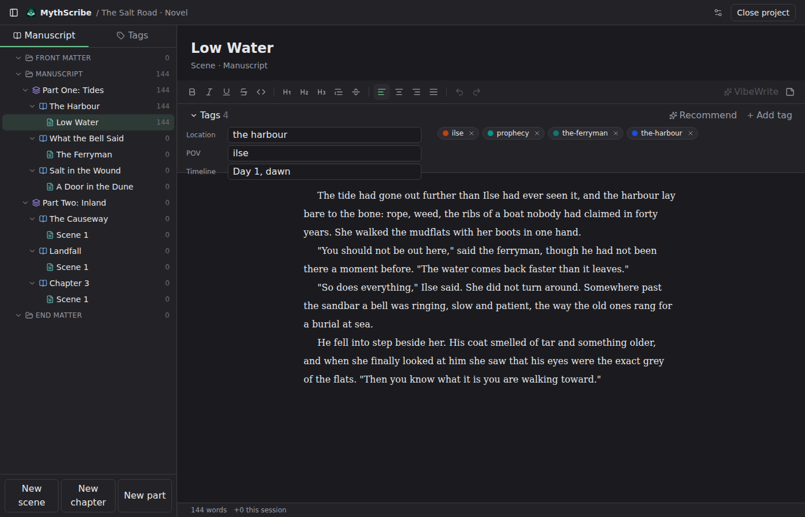
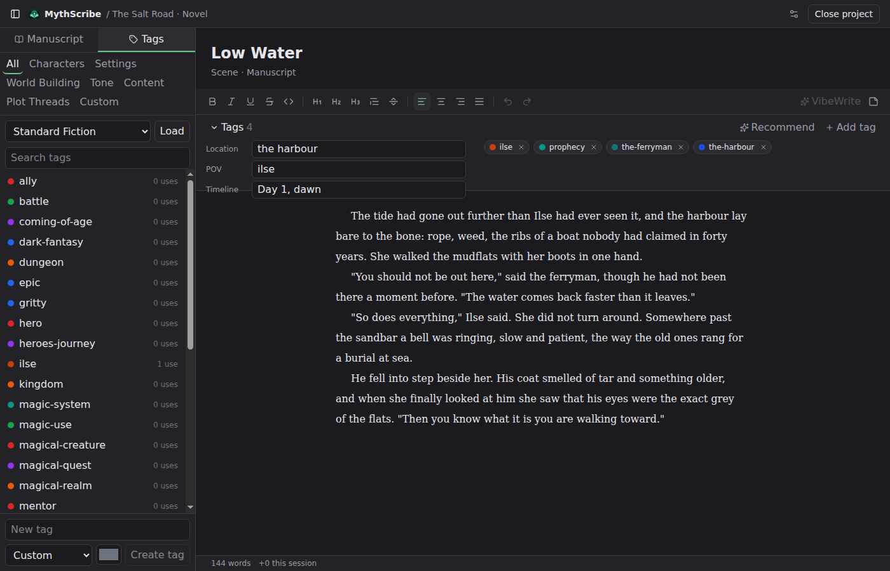
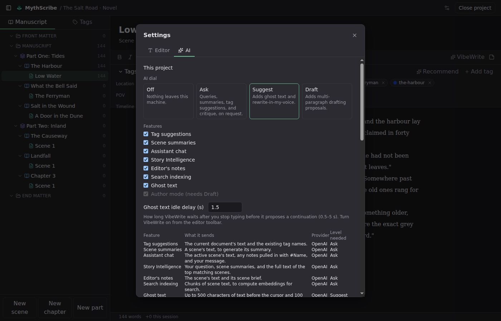

Write your novel on your own machine.
MythScribe is a desktop app for fiction writers: a Scrivener-style organizer, a distraction-free editor, story tags, and AI that reads your manuscript and keeps your voice. It is free, it works offline, and nothing leaves your computer unless you turn the AI dial up yourself.
-
Local-first
A project is a folder on your disk: one database file plus your assets. No account, no sign-in, no sync you did not ask for. Copy the folder and you have a backup.
-
Never lose words
Every pause in typing saves your work, and the app flushes pending saves before it lets a window close or the app quit. Word counts, tags, and notes live in the same file as the text.
-
AI assists, you decide
Every AI output is a proposal you accept, edit, or dismiss. Nothing is written into your manuscript silently, and AI is off when you install. Each feature tells you exactly what it sends before you turn it on.
What it looks like
Screenshots from the current development build with a sample project. The interface is dark by default; themes come later.
{kind=link}

{kind=link}

# in the editor to tag
inline.
{kind=link}

AI on your terms
AI features are optional and off when you install. The dial in Settings runs from Off, where nothing leaves your machine, to Draft. Every feature lists what it sends, and every result is a proposal you have to accept. The AI dial page has the full table.
Bring your own key Free
Enter your OpenAI API key in Settings. The key is stored in your operating system's secure storage, and requests go straight from the app to OpenAI: nothing passes through us, and we never see your key or your text. You pay OpenAI for what you use; the app shows the cost of every request and a running total, and you can set a daily cap.
MythScribe Cloud Not yet available
A subscription for writers who would rather not manage an API key: sign in, and the app sends AI requests through a small proxy that meters usage and hands them to the provider. The proxy will not store or log manuscript text, and billing will go through Lemon Squeezy. It is not built yet; the app you can download today is bring-your-own-key only.
Download
MythScribe is still in development and there are no public builds yet. The buttons below go to the GitHub releases page, which is where the first Windows build will appear, followed by macOS and Linux. Installers will be signed before the first public release.
Want to know when the first build is out? Email hello@mythscribe.app and I will reply when it ships. No mailing list, no tracking.